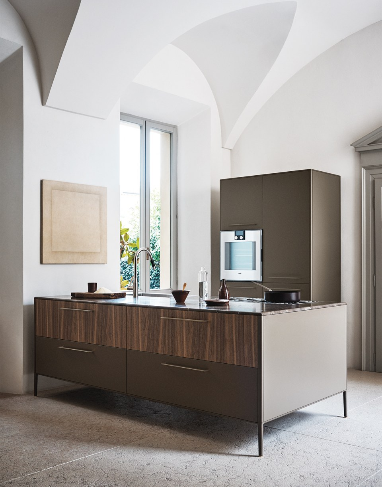
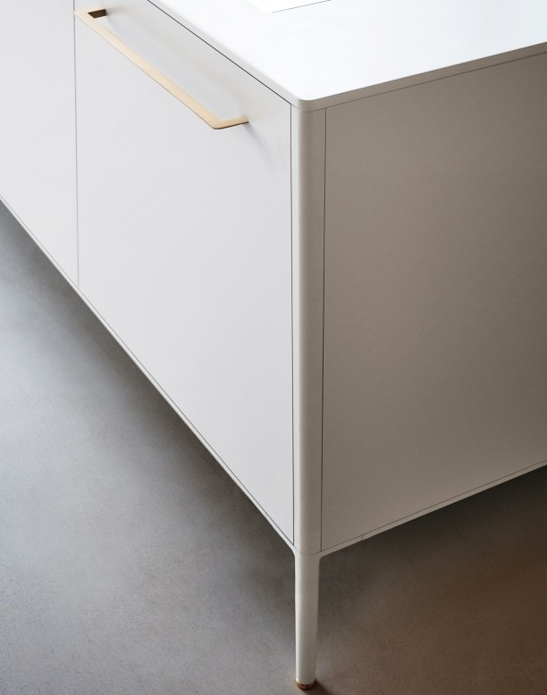

Unit
Design by Garcia Cumini
Unit — кухонный остров нового поколения, построенный на алюминиевой конструктивной раме. Приподнятая над полом структура создаёт ощущение лёгкости и визуально освобождает пространство, превращая кухню в архитектурный объект интерьера.
Система Unit Pocket органично соединяет кухню с жилой зоной: раздвижные панели скрывают рабочую поверхность, позволяя пространству свободно перетекать из одной функции в другую. Регулируемые ножки с отделкой Champagne Brass подчёркивают благородство материалов.
Широкий выбор отделок — от матового лака до натурального дерева и камня — позволяет адаптировать Unit под любой характер интерьера: от строгого минималистичного до тёплого и фактурного.


Свобода — самое важное в жизни: свобода меняться, адаптироваться, открывать новые пути. Я учусь слышать себя — это даёт мне смелость идти вперёд, не оглядываясь. Каждое решение я принимаю осознанно, зная, что именно оно ведёт меня туда, где я должен быть. Unit создан дизайнерами Garcia Cumini — студией, в которой итальянская точность встречается со страстью к жизни во всей её полноте. Кухня здесь перестаёт быть только утилитарным объектом: она становится частью архитектуры, языком, на котором пространство разговаривает с человеком. Алюминиевая рама, парящий над полом корпус, материалы с характером — всё это не детали, а принципы, из которых складывается целое.
Home
В конце любого путешествия мы возвращаемся домой. Unit создаёт это ощущение через материал, свет и пропорции.
Конструктивная логика острова и тщательно подобранные отделки превращают кухню в место, к которому хочется возвращаться снова и снова.
